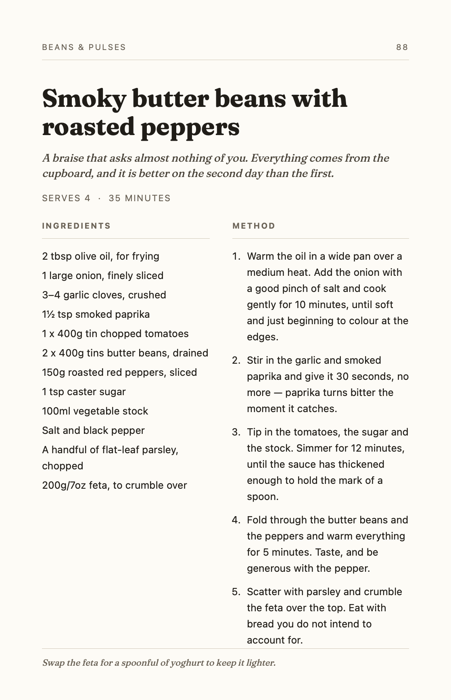
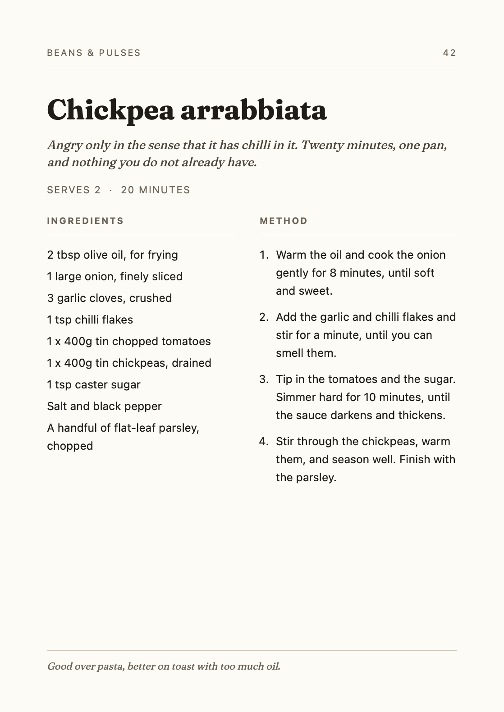
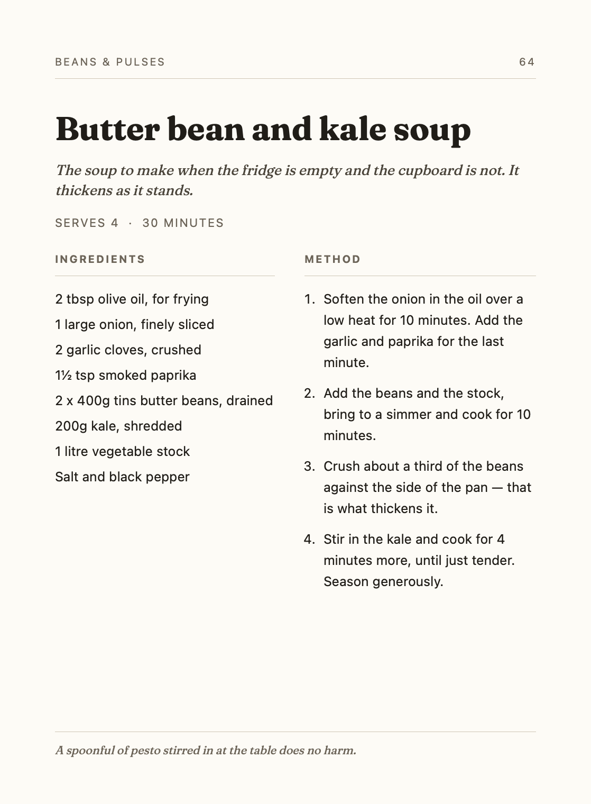

Sample pages
Three cookbook pages for trying Page & Plate without a cookbook to hand. The recipes were written for the app and come from nobody's book.
- Touch and hold a page below, then choose Save to Photos.
- In Page & Plate, open Recipes, tap +, then Scan a recipe.
- Tap Choose photos, pick the page, then Extract.
Or print a page, or show it on another screen, and photograph it with Scan pages.


